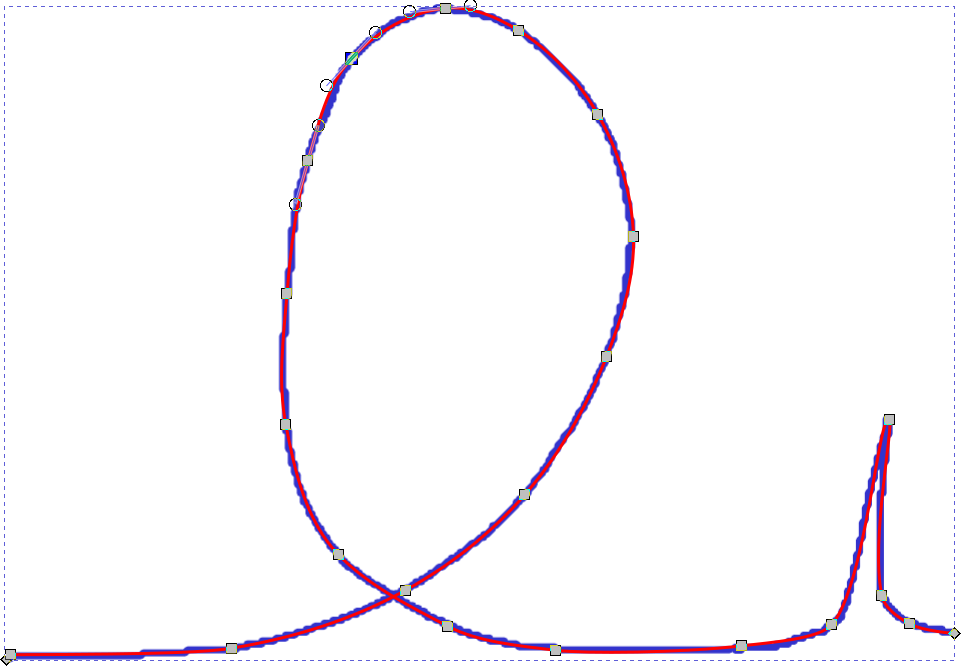
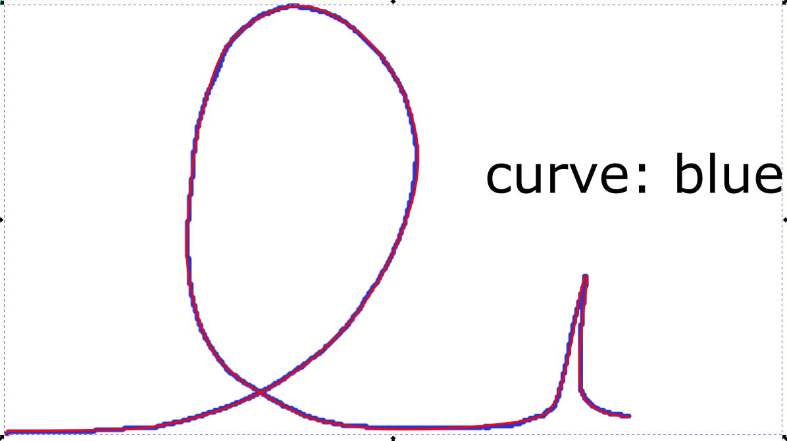

Usage
The SVG files used throughout this documentation (as well as those used for testing svgdigitizer), were create with Inkscape (tested with V. 0.92 and V. 1.1). All files are available for download from the repository.
Note
The preceding ! in the following CLI examples is used to evaluate shell commands in jupyter notebooks. Remove the ! to evaluate the command in the shell.
Prepare the SVG
From an Image File
Import an image file into an empty Inkscape document, for example, via drag and drop.
Hint
We suggest linking the image in the SVG, since embedded pictures seem to increase the time required for svgdigitizer to retrace the curve (see #19).
Hint
It is recommended to lock the image file in the Layers and Objects pane, which turns the image sort of into a static background object and thus can not be moved during the SVG annotation.
From PDF
When the figure is included inside a PDF use the svgdigitizer CLI to create an SVG from the PDF by typing.
!svgdigitizer paginate ./files/others/looping.pdf
An SVG file is created for each page of the PDF. The image is locked and acts as static background object.
SVG Annotation (Basics)
We consider the following example figure.
{kind=link}
{kind=link}
The minimum requirements to digitize such a figure with svgdigitizer are:
marking two points on each axis with a group containing a text label and line pointing at a position on the axis. The label must be of type
x1: -40,x2: 40,y1: -10, andy2: 100.xandycan also be replaced with dimensions, such asU,T,elephantsetc.The number can also be followed by a unit, such as
T1: 20 Korv1: 20 km / s. (see more on units below)
Tracing the curve with a bezier path which is grouped with a text label of type
curve: identifier(see below)
An annotated SVG of the example figure is shown below and can be explored locally by placing it in the same folder as the example figure above.
{kind=link}

The figure can be retraced, for example in 0.01 steps, with respect to the x-axis values with the API.
from svgdigitizer.svg import SVG
from svgdigitizer.svgplot import SVGPlot
from svgdigitizer.svgfigure import SVGFigure
svg = './files/others/looping.svg'
plot = SVGFigure(SVGPlot(SVG(open(svg, 'rb')), sampling_interval=0.01))
plot.plot()
No text with scan rate found in the SVG or provided metadata.

Alternatively the data can be digitized with the CLI
!svgdigitizer figure looping.svg --sampling_interval 0.01
Usage: svgdigitizer figure [OPTIONS] SVG
Try 'svgdigitizer figure --help' for help.
Error: No such option: --sampling_interval Did you mean --sampling-interval?
Curve Tracing
Step 1: Select the the tool Draw Bezier curves  and select the mode
and select the mode Create regular Bezier path . Try using as few nodes as possible. It is desired that a node is placed at maxima of sharp peaks. This way these features are not missed when using low sampling rates.
. Try using as few nodes as possible. It is desired that a node is placed at maxima of sharp peaks. This way these features are not missed when using low sampling rates.

Note
You can omit step 2 when you want to retrace a scatter plot, unless you whish to reconstruct possible missing datapoints in between.
Step 2: Select the curve, select the tool Edit paths by node , and select all nodes by pressing
, and select all nodes by pressing CTRL-a. Click on the option make selected nodes smooth .
.
Click on individual nodes and adjust the handles such that the path matches the curve in the plot. Eventually adjust the position of the nodes or add additional nodes. Do this for each node until you are satisfied with the result.
{kind=link}
Step 3: Add a text field and name it curve: identifier, which in this case could be curve: blue.
Note
The identifier is relevant when multiple curves can be found in a single plot.
Step 4: Group the text field and the curve.
{kind=link}
Units
Units should be provided in the astropy format. In brief:
Standard units simply read:
V,Aorm.Units can be preceeded by common prefixes, i.e.,
mV,kVoruV. (Note that \(\mu\) isu.)fractions read as follows:
mV / s,mA / cm2.For square, cubic, etc units simply add
2,3, … to the unit (see above).Use parentheses if more than one unit is in the numerator or denominator, i.e.,
(kg m) / s2
Advanced plots
Data can be presented in different ways in figures and eventually some additional information can be extracted from a properly annotated SVG. For example, svgdigitizer is able to reconstruct a time axis from a scan rate, remove distortion from skewed axis, reconstruct data from scale bars, or apply scaling factors.
Time Series (Scan Rate)
Usually data is recorded with a certain rate (unit per unit time), measuring another variable, resulting in 2D time series data. In a plot, however, often the two variables are plotted one against another and the temporal information is lost. For example, assume a cyclist is riding his bike through a looping at a constant velocity of 30 m/s. The following figure shows the position of the cyclist in terms of distance and height. By adding a text label scan rate: 30 m / s the SVGFigure module is able to reconstruct the time axis.

The resulting data
from svgdigitizer.svg import SVG
from svgdigitizer.svgplot import SVGPlot
from svgdigitizer.svgfigure import SVGFigure
svg = './files/others/looping_scan_rate.svg'
plot = SVGFigure(SVGPlot(SVG(open(svg, 'rb')), algorithm='mark-aligned', sampling_interval=0.01))
plot.df.head(8)
| t | d | height | |
|---|---|---|---|
| 0 | 0.000000 | -36.310556 | 15.020192 |
| 1 | 0.000333 | -36.300556 | 15.051233 |
| 2 | 0.000667 | -36.290556 | 15.080984 |
| 3 | 0.001000 | -36.280556 | 15.109806 |
| 4 | 0.001333 | -36.270556 | 15.137820 |
| 5 | 0.001667 | -36.260556 | 15.165090 |
| 6 | 0.002000 | -36.250556 | 15.191657 |
| 7 | 0.002333 | -36.240556 | 15.217546 |
Skewed Figures
Figures can have distorted (skewed) axis. Such plots can, for example, be found in old scanned publications, such as in the following example.

To remove the distorition first annotate the SVG in the same way as in the basic example.
{kind=link}

To digitize the SVG add the argument algorithm='mark-aligned', upon invoking the SVGPlot object.
Warning
To remove the distortion a superficial coordinate system is created from the position of the labels on both axis (straight lines connect these points). Thus the distortion along the axis is not resolved by this approach and thus the data might deviate slightly from the original data.
from svgdigitizer.svg import SVG
from svgdigitizer.svgplot import SVGPlot
from svgdigitizer.svgfigure import SVGFigure
svg = './files/others/example_plot_skewed.svg'
plot = SVGFigure(SVGPlot(SVG(open(svg, 'rb')), algorithm='mark-aligned', sampling_interval=0.01))
plot.plot()
Alternatively use the CLI and add the option --skewed
!svgdigitizer figure ./files/others/example_plot_skewed.svg --skewed --sampling-interval 0.01
No text with scan rate found in the SVG or provided metadata.
No text with `figure` containing a label such as `figure: 1a` found in the SVG.
Scaling Factors
To compare data with signals of different magnitude, eventually the dataset with the lower magnitude is rescaled with a certain factor. Such factors are usually provided in the scientific figure (or its caption).

To rescale the resulting data, add a text field, such as x_scaling_factor: 8.3, where x should be the name of the dimension on the respective axis.
An annotated SVG looks as follows.
{kind=link}
{kind=link}
The data can be acquired without further options with the API
from svgdigitizer.svg import SVG
from svgdigitizer.svgplot import SVGPlot
from svgdigitizer.svgfigure import SVGFigure
svg = './files/others/looping_scaling_factor.svg'
plot = SVGFigure(SVGPlot(SVG(open(svg, 'rb')), sampling_interval=0.01))
plot.plot()
or simply by using one of the digitizing options of the CLI.
!svgdigitizer figure ./files/others/looping_scaling_factor.svg --sampling-interval 0.01
No text with scan rate found in the SVG or provided metadata.
No text with `figure` containing a label such as `figure: 1a` found in the SVG.
Scale Bars
Some published data are lacking a y-scale. Instead a scale bar is shown, which provides information on the magnitude of the features observed in such a figure such as in the following example.

To extract the data one has to know at least one point on the y-axis
(usually a baseline is provided as in the example above).
That point as is annotated as in the simple example above with a text label, such as x1: 0 m,
where x can be the dimension of the x-axis, grouped with a line pointing to the respective origin
For the scale bar add a text label, such as, x_scale_bar: 40 m, where x should be the same label as that used for the origin.
In addition draw two lines pointing to both extremes of the scale bar, and group these lines with the label.
An annotated SVG looks as follows.
{kind=link}
Note
This approach also works for scale bars for the x-axis or both x- and y-axis.
{kind=link}
The data can be acquired without further options with the API
from svgdigitizer.svg import SVG
from svgdigitizer.svgplot import SVGPlot
from svgdigitizer.svgfigure import SVGFigure
svg = './files/others/looping_scale_bar.svg'
plot = SVGFigure(SVGPlot(SVG(open(svg, 'rb')), sampling_interval=0.01))
plot.plot()
or simply by using one of the digitizing options of the CLI.
!svgdigitizer figure ./files/others/looping_scale_bar.svg --sampling-interval 0.01
No text with scan rate found in the SVG or provided metadata.
No text with `figure` containing a label such as `figure: 1a` found in the SVG.
Scatter Plots
Some text

To remove the distorition first annotate the SVG in the same way as in the basic example.
{kind=link}

The data can be acquired with the API without specifying a sampling interval.
from svgdigitizer.svg import SVG
from svgdigitizer.svgplot import SVGPlot
from svgdigitizer.svgfigure import SVGFigure
svg = './files/others/scatter_plot.svg'
plot = SVGFigure(SVGPlot(SVG(open(svg, 'rb'))))
plot.df.plot.scatter('d', 'height', color='red')
<Axes: xlabel='d', ylabel='height'>
Alternatively use one of the digitizing options of the CLI, omitting the --sampling-interval option.
!svgdigitizer figure ./files/others/looping_scale_bar.svg
No text with scan rate found in the SVG or provided metadata.
No text with `figure` containing a label such as `figure: 1a` found in the SVG.
Note
All other advanced annotation options above, such as a scan rate, scale bar, scaling factor, … are equally applicable to scatter plots.
Datapackage Interaction
The datapackages obtained with the svgdigitizer can be used along with the frictionless framework.
from frictionless import Package
package = Package('./files/others/looping_scan_rate.json')
package
{'resources': [{'name': 'looping_scan_rate',
'type': 'table',
'path': 'looping_scan_rate.csv',
'scheme': 'file',
'format': 'csv',
'mediatype': 'text/csv',
'encoding': 'utf-8',
'schema': {'fields': [{'name': 't',
'type': 'number',
'unit': 's'},
{'name': 'd',
'type': 'number',
'unit': 'm'},
{'name': 'height',
'type': 'number',
'unit': 'm'}]},
'metadata': {'echemdb': {'experimental': {'tags': []},
'source': {'figure': '',
'curve': 'blue'},
'figure description': {'type': 'digitized',
'simultaneous measurements': [],
'measurement type': 'custom',
'fields': [{'name': 'd',
'type': 'number',
'unit': 'm',
'orientation': 'horizontal'},
{'name': 'height',
'type': 'number',
'unit': 'm',
'orientation': 'vertical'}],
'comment': '',
'scan rate': {'value': 30.0,
'unit': 'm '
'/ '
's'}}}}}]}
Alternatively use the unitpackage module, which is specifically designed for Data Packages describing data with units. It also allows creating a database from all packages within a folder.
from unitpackage.local import collect_packages
from unitpackage.database import Collection
db = Collection(packages=collect_packages('./files/others/'))
entry = db['looping_scan_rate']
entry.df